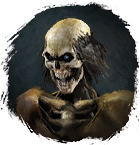

Открыть в интерактивной вики →
| Уровень | 28 |
|---|---|
| Сила (PvE) | 1202 |
| Аспект арены | Farao |
| Здоровье | 2000 |
| Мана | 1200 |
| Выносливость | 1200 |
| Респаун | 60 минут - 75 минут |
Команда


Дроп


Статистика

Уровень: 28
Здоровье: 2 000
Мана: 1 200
Выносливость: 1 200
Умения
| Обычная атака | Бросок камнем |
Иммунитеты / особые умения
-
Локация
Пещеры под Границей
Подзамок